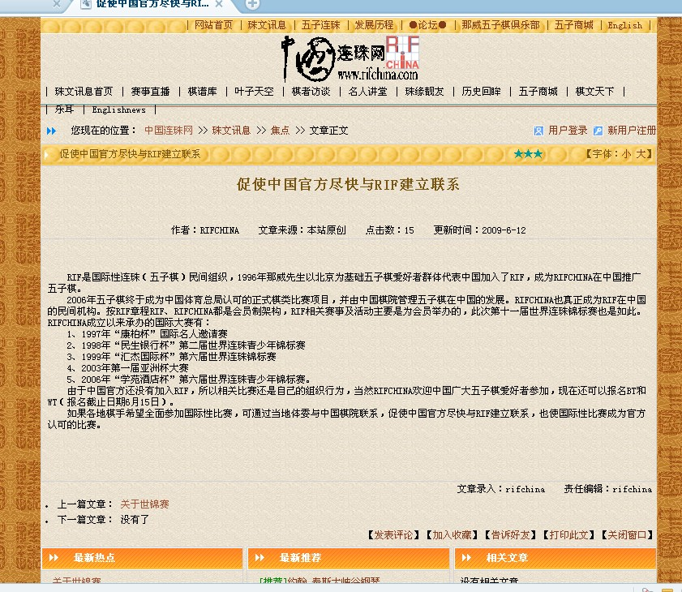

感谢RC官方为中国五子棋发展牺牲棋情小天,RC.你们很伟大
#1 感谢RC官方为中国五子棋发展牺牲棋情小天,RC.你们很伟大作者：不知 发表时间：2009-6-12 16:10:39
http://www.rifchina.com/Article/ShowArticle.asp?ArticleID=5409原文链接
啊..敬爱的RC..我一直误解着你们..原来你们一直在为中国五子棋牺牲..大家都不知道..这次牺牲了棋情小天..大家终于知道了..问这个算算对中国官方的威胁?
#2 Re:感谢RC官方为中国五子棋发展牺牲棋情小天,RC.你们很伟大作者：有志青年 发表时间：2009-6-12 16:24:09
我认识很多智商超群的人，也认识一些聪明过头的人。
聪明过头了，最终都不会有啥好的结果，今世今身没有报应的话，很难保证……
#3 Re:感谢RC官方为中国五子棋发展牺牲棋情小天,RC.你们很伟大作者：不知 发表时间：2009-6-12 16:26:08
 RC明显的意思就是:你们中国官方不妥协.这次牺牲的棋情小天.那么下次...(我也不知道牺牲谁!)
RC明显的意思就是:你们中国官方不妥协.这次牺牲的棋情小天.那么下次...(我也不知道牺牲谁!)
敢问那胖现在还敢出门不?
#4 Re:感谢RC官方为中国五子棋发展牺牲棋情小天,RC.你们很伟大作者：连珠的明天 发表时间：2009-6-12 16:34:20
无语……
真搞不懂，竟然有人为了这一点权力和地位而不惜引起公愤！
#5 Re:感谢RC官方为中国五子棋发展牺牲棋情小天,RC.你们很伟大作者：星夜无云 发表时间：2009-6-12 16:34:20
竟然鼓动各地棋手向中国棋院施压，没有任何人会承认RC的#6 Re:感谢RC官方为中国五子棋发展牺牲棋情小天,RC.你们很伟大作者：星夜无云 发表时间：2009-6-12 16:37:34
原来这就是QT门事件的真正目的#7 Re:感谢RC官方为中国五子棋发展牺牲棋情小天,RC.你们很伟大作者：丹尼 发表时间：2009-6-12 16:43:06
精心策划的阴谋
#8 Re:感谢RC官方为中国五子棋发展牺牲棋情小天,RC.你们很伟大作者：屏蔽 发表时间：2009-6-12 16:52:45
我对这帖不持任何态度
我在中国连珠网看到这个信息的时候实在没读懂是啥意思 - -
#9 Re:感谢RC官方为中国五子棋发展牺牲棋情小天,RC.你们很伟大作者：王小 发表时间：2009-6-12 17:01:30
棋院 本来就很官僚，还有人比棋院更官僚。呵呵
#10 Re:感谢RC官方为中国五子棋发展牺牲棋情小天,RC.你们很伟大作者：廉价民工 发表时间：2009-6-12 17:09:00
我早就说过，某人真正的目的就在于此，小心晚节不保啊
#11 Re:感谢RC官方为中国五子棋发展牺牲棋情小天,RC.你们很伟大作者：丝袜伯爵 发表时间：2009-6-12 17:28:20
我同意屏蔽的意见，看不懂什么意思
#12 Re:感谢RC官方为中国五子棋发展牺牲棋情小天,RC.你们很伟大作者：厦门小天 发表时间：2009-6-12 17:30:57
唉，其实大鱼昨天就跟我说的这个才心灰意冷的。为什么非要我联系福建棋院跟那威协商也就好理解了。#13 Re:感谢RC官方为中国五子棋发展牺牲棋情小天,RC.你们很伟大作者：晶晶 发表时间：2009-6-12 17:37:13
真是搞笑，这次事件没有发生以前这么说说也就罢了，发生以后，我看应该是促使大家对rf产生极大恶感，极为反对中国棋院与rc联系，真的发生联系了，棋手们还有路可走么？#14 Re:感谢RC官方为中国五子棋发展牺牲棋情小天,RC.你们很伟大作者：无尽 发表时间：2009-6-12 18:25:51
直观上感觉这是事情发生后转移焦点一个很好的方法，既为自己内定的做法而找到借口，也把责任推到中国棋院不接管身上。
到底是开始的预谋，还是事后的借题发挥，恐怕一般人还难以确定（因为信息不对称）。从天元的日志内容看，很明显他是没参与这阴谋的，也是某人政治目的的牺牲品；假若是一开始的预谋，那天元的反应就。。。。
以上只是个人的推理。
#15 Re:感谢RC官方为中国五子棋发展牺牲棋情小天,RC.你们很伟大作者：黄药师 发表时间：2009-6-12 18:36:33
终于明白了，为什么一个三个国家玩的棋--围棋，有这么多人关注。而五子棋我至今没有在央视报道中看到过~~~~
内乱不断啊~~~~~
#16 Re:感谢RC官方为中国五子棋发展牺牲棋情小天,RC.你们很伟大作者：无尽 发表时间：2009-6-12 18:40:07
围棋也有问题，就最近的两个大事，李世石与韩国棋院闹矛盾封棋一年半，马晓春与 俞斌/中国棋院 之的矛盾，就“棋王”名号闹得满城风雨，攻击难听的话比这里多着；曾经并列的两个国象世界棋协之间的矛盾（同时有两个世界冠军）；中象也有，只要多关心相关新闻，其实发现都不少，负面影响大多了。有人有江湖涉及到利益就会有争论。#17 Re:感谢RC官方为中国五子棋发展牺牲棋情小天,RC.你们很伟大作者：四川连珠魂 发表时间：2009-6-12 19:02:38
rifchina的意思很明显，让五子棋爱好者给中国棋院施压，官方主动去和“他们”联系，好像是求“他”1样，说实话，中国棋院根本不用搭理“你",五子棋这个项目本来就在发展阶段，大家都不能团结起来还谈什么以后发展。俗话说打得了天下再分天下，现在是打都没打下来就闹内乱了，不禁有想起 伟鬼大哥的 那篇帖子“是谁阻碍了中国五子棋的发展”。。。
［ 无尽 于 2009-6-12 19:54:21 时花20金币送鲜花一朵］
#18 Re:感谢RC官方为中国五子棋发展牺牲棋情小天,RC.你们很伟大作者：wrwak 发表时间：2009-6-12 19:07:42
那威出门不会有任何事，不要夸大其辞了，你以为全国都大部分这样愤慨？
大家都是文明人，所以愤慨只是一种声音的表达。
#19 Re:感谢RC官方为中国五子棋发展牺牲棋情小天,RC.你们很伟大作者：屏蔽 发表时间：2009-6-12 20:29:32
这个东西很奇怪——现在有三个方面
RIFChina
广大五子棋棋手、爱好者
中国棋院
说实话，这里中国棋院最大，没有了另外俩，他照样过活
所以根本不存在RIFChina或者广大五子棋棋手、爱好者向中国棋院施压的问题
我们的理想是：广大五子棋棋手、爱好者，通过RIFChina，使五子棋项目、组织、比赛得到中国棋院的承认
现在这个理想的环节在RIFChina这里出现了一些问题
RIFChina发表如此声明很令人不解，若是广大五子棋爱好者、棋手可以直接联系上中国棋院的话，他的立足之地不就没有了？为何促使这样有损自身利益的事情发生？还是说他根本认为没有RIFChina作为桥梁来介入，广大五子棋棋手、爱好者根本不可能和中国棋院有正式的联系？
这是我对此声明所不理解的地方。
［ 无尽 于 2009-6-12 20:37:28 时花20金币送鲜花一朵］
#20 Re:感谢RC官方为中国五子棋发展牺牲棋情小天,RC.你们很伟大作者：廉价民工 发表时间：2009-6-12 20:48:33
同意屏蔽老师的话，可是某人蠢就蠢在这一点，他太有点急功近利，小家子气了。现在还没有拿这个作为职业的人，这样做威胁不到任何人，只能作茧自缚，还毁了身边的人！
#21 Re:感谢RC官方为中国五子棋发展牺牲棋情小天,RC.你们很伟大作者：四川连珠魂 发表时间：2009-6-12 20:48:44
"我们的理想是：广大五子棋棋手、爱好者，通过RIFChina，使五子棋项目、组织、比赛得到中国棋院的承认"
为什么得通过rifchina五子棋项目才能得到棋院承认呢?近几年五子棋的发展我认为一方面是五子棋爱好者们自身的努力专研，另1方面是各大主要连珠俱乐部的共同努力。
#22 Re:感谢RC官方为中国五子棋发展牺牲棋情小天,RC.你们很伟大作者：tears 发表时间：2009-6-12 20:52:07
我个人的理解是：
江河日下的RC不甘心已沦落为一个地方性俱乐部的事实，于是精心策划了这个事件，期望殊死一搏咸鱼翻身。
利用手上仅有的这点权力，向中国棋院施压以图自身获益。
但在我看来，RC高估了自己的能量和本钱。就好像西藏某喇嘛与中央政府会谈，中央说谈没问题，咱们欢迎，但你没资格提这样那样的条件，否则不鸟你。所以这几年了，RC和中国棋院不是不愿意坐下来谈，只是谈不成，因为条件谈不拢。
所以我绝不相信RC及某人本人仅仅是为了中国五子棋更好的发展，他还另有所图。否则帮助、配合中国棋院推广五子棋项目，棋院高兴还来不及，怎么可能排斥你？
一个真正的五子棋推广者，他一切的努力不是为了名、利、权，而是缘于对这项运动的热爱。自己可以什么都不要，只要能看到五子棋项目欣欣向荣的发展局面。比如伟鬼，如果浙江有另一个人或另一个组织也在大力推广五子棋，我相信他只会感到高兴，而不会觉得对自己是个威胁，不会和人家争谁是老大。
RC前期确实在客观上推动了国内五子棋项目的发展，但目前的这种高姿态已经严重阻碍了中国五子棋的更快更好发展。
也许你感叹创业容易守业难，可你何不大度一些，交给守得好的人去守，或者帮着守得好的人去守。你放不下的到底是什么？
［ 厦门小天 于 2009-6-12 20:54:30 时花20金币送鲜花一朵］
［ 无尽 于 2009-6-13 9:26:59 时花20金币送鲜花一朵］
［ 梦婷 于 2009-6-17 20:01:20 时花20金币送鲜花一朵］
#23 Re:感谢RC官方为中国五子棋发展牺牲棋情小天,RC.你们很伟大作者：大元 发表时间：2009-6-12 22:26:05
不错，有人还想假借中国棋院来转移矛盾的焦点，让中国棋院来背黑锅，无耻且拙劣的伎俩#24 Re:感谢RC官方为中国五子棋发展牺牲棋情小天,RC.你们很伟大作者：五林外传 发表时间：2009-6-13 9:22:38
http://gamebbs.qq.com/content/11205/content_static_39898_0.html?reload=1
请看上面QQ论坛
看来他们把舆论宣传当做争夺的武器了
#25 Re:感谢RC官方为中国五子棋发展牺牲棋情小天,RC.你们很伟大作者：解放者 发表时间：2009-6-13 10:07:04
我别的不看，就单看瑞腐只许那26种基本开局就知道这规则够垃圾了。
妖刀才是高手比拼的舞台，居然不要。
#26 Re:感谢RC官方为中国五子棋发展牺牲棋情小天,RC.你们很伟大作者：小二中 发表时间：2009-6-22 15:21:41
精彩
精彩
［ 逆刃 于 2009-6-22 15:29:14 时惩罚此帖，发帖者[金币减20 威望减1］
恶意灌水，严重处理！
#27 Re:感谢RC官方为中国五子棋发刮牲棋情小?#44;RC.你们很伟大作者：轻雨飞扬 发表时间：2009-6-22 17:34:42
怎么这样乱呀？大家都是玩五子棋的，本来五子棋在中国发展就很艰难，这个节眼上，大家心胸都开阔点好吧？团结一切可以团结的力量才对呀！#28 Re:感谢RC官方为中国五子棋发展牺牲棋情小天,RC.你们很伟大作者：杜茆轩 发表时间：2009-7-24 4:45:05
 小天棋情你们光荣把。
小天棋情你们光荣把。#29 Re:感谢RC官方为中国五子棋发展牺牲棋情小天,RC.你们很伟大作者：纳米 发表时间：2009-7-24 9:49:24
现在起名泪水的，各种毒的太多，我都不敢确认23楼是谁了。#30 Re:感谢RC官方为中国五子棋发展牺牲棋情小天,RC.你们很伟大作者：gigiqi 发表时间：2009-7-24 11:12:04
智运会多多少少会改变目前情况的，虽然不会太快，还是期待。。。。
#31 Re:感谢RC官方为中国五子棋发展牺牲棋情小天,RC.你们很伟大作者：苗儿青青 发表时间：2009-7-27 20:26:19
棋情小天就是强，他们对五子棋始终都因为是有爱好和兴趣，而不存在什么功利，就这点而言，他们比那些人不知要伟大到哪里去了。文章我没看懂，牺牲了什么？只要他们兴趣和爱好还在，一点没有受损，就根本谈不上什么牺牲，所以有些人好象有些幸灾乐祸的过了头，聪明的过了头。纯粹无聊绝对无知。